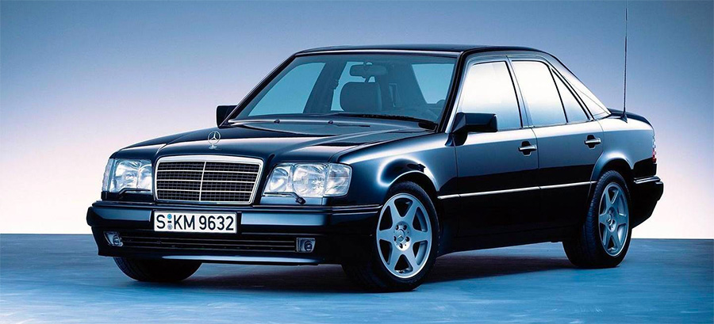
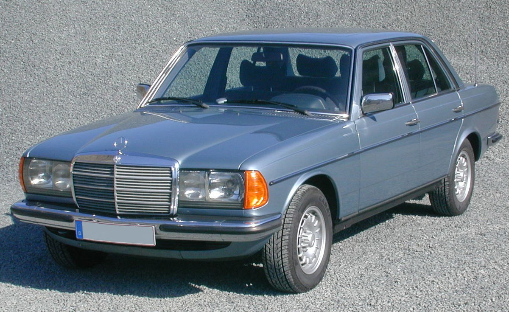
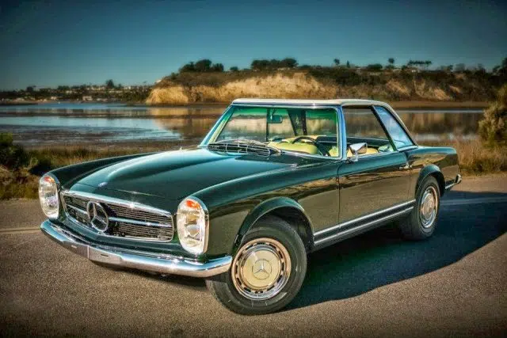
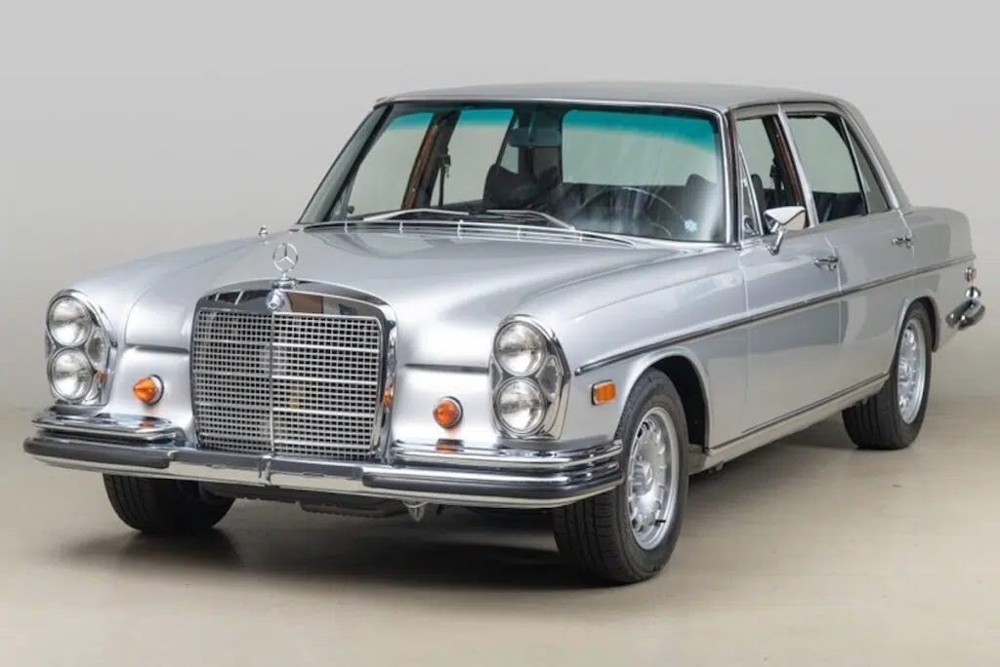
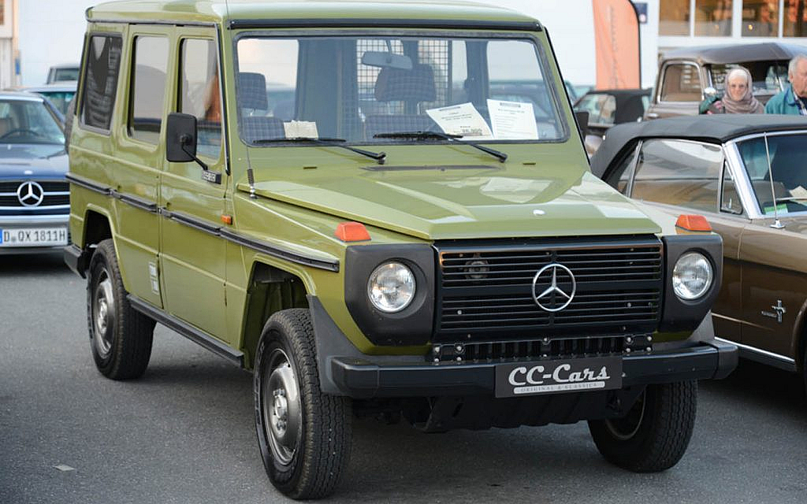
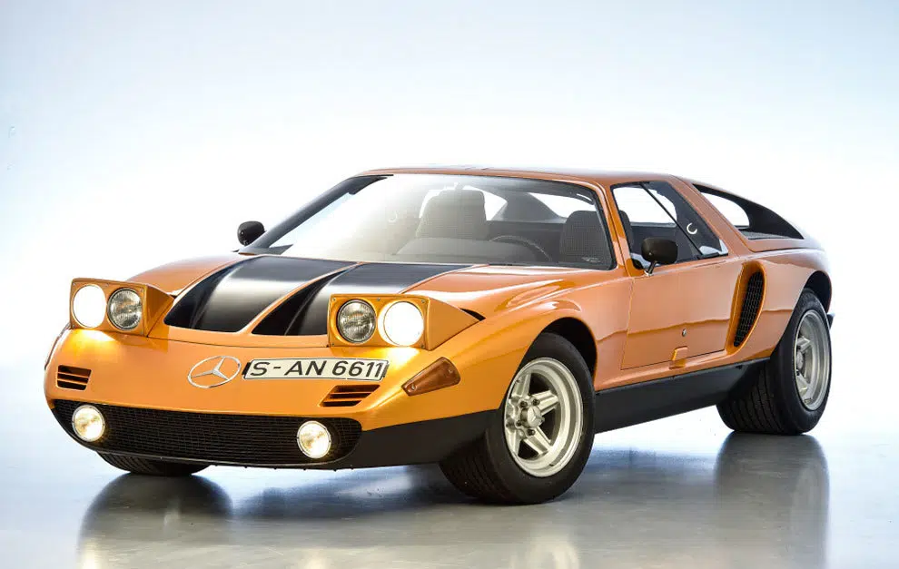
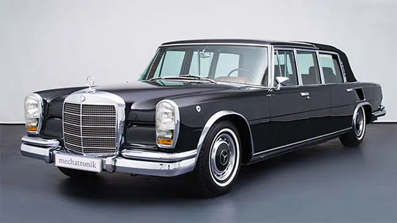
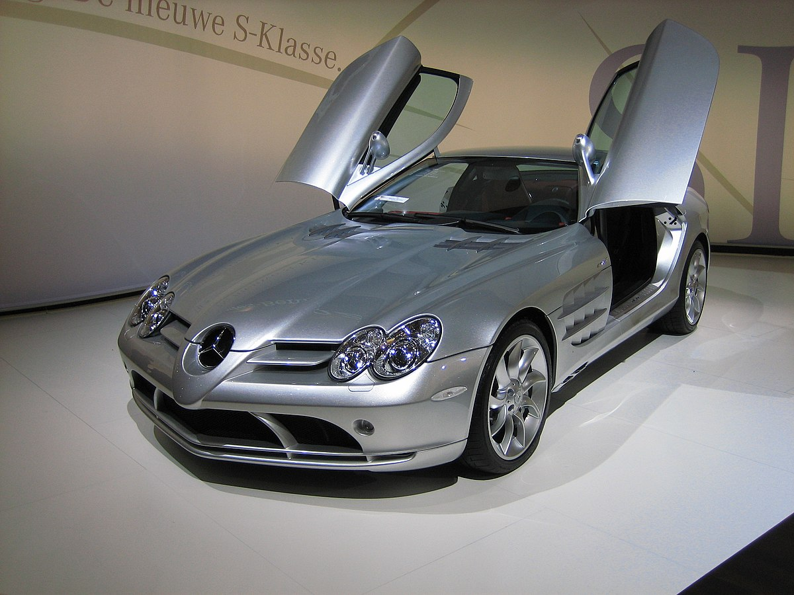

Mercedes-Benz 500E

Este es el único vehículo que la marca Porsche ha construido para Mercedes, con un motor V8 de 5.0 litros. Por esta razón es uno de los modelos de colección más potentes, exclusivos y caros de Mercedes-Benz, ya que solo fabricaron 1500 ejemplares.
Mercedes-Benz W123 y W124 (Clase E)

Estos son los predecesores del Mercedes Clase E. Muchos coleccionistas consideran que son los modelos más robustos de la marca, ya que se tratan de coches históricos y extremadamente robustos. En su momento se caracterizaron por ser capaces de alcanzar un millón de kilómetros sin presentar problemas mecánicos.
Durante décadas, la Clase E fue la preferida de los taxistas europeos. Actualmente se conservan ejemplares de ambas generaciones, con carrocería Berlina, Coupé y Cabriolet.
Mercedes-Benz 280 SL Pagoda

El vehículo Mercedes-Benz 280 SL Pagoda es uno de los coches clásicos con mayor trascendencia de la marca. En aquella época (1967-1971), este modelo tenía un motor sumamente potente de seis cilindros de 2.8 litros, capaz de generar 170 caballos de fuerza.
Mercedes-Benz 300 SEL 6.3

Este es un modelo de lujo fabricado entre los años 1968 y 1972. Contaba con uno de los motores más potentes fabricado por Mercedes-Benz: el M100 V8 de 6.3 litros fue instalado en otros modelos como el 300 SEL de seis cilindros.
Mercedes-Benz G Class

Este modelo es un todoterreno de lujo que comenzó a fabricarse en el año 1978 y que todavía se sigue produciendo. Los expertos en mercedes clásicos consideran a este vehículo el mejor todoterreno del mercado aún en pleno 2021.
El modelo Mercedes-Benz G Class se utiliza tanto como vehículo militar como de paseo gracias a su alta calidad y robustez. Actualmente se fabrican variantes a seis ruedas de este vehículo y se ha vendido por todo el mundo.
Cuenta con variantes como la W460, la W461 y la W463 que se produjeron entre los años 1989 y 2000.
Mercedes-Benz C111 Wankel Prototype

El C111 no es un coche de producción, sino una serie experimental de automóviles superdeportivos con motor central que fabricó Mercedes-Benz durante la década de los 60 y comienzos de los 90.
Con este modelo lograron probar nuevas tecnologías como los motores diésel, turbocompresores y motores Wankel, las puertas de ala de gaviota, el aire acondicionado y diseños nuevos de tapicería de cuero y de lujo.
Mercedes-Benz 600 Pullman Landaulet

El modelo Pullman Landaulet es uno de los mercedes antiguos más lujosos que se han fabricado y es lo más cercano a una limusina que existe en la marca. Es célebre por ser el predilecto de reyes, presidentes y dictadores de todo el mundo.
Mercedes-Benz Exclusivos
Mercedes-Benz SLR McLaren

El término "Mercedes SLR McLaren exclusivo" se refiere a las ediciones limitadas y más deseables del superdeportivo de colaboración entre Mercedes-Benz y McLaren.